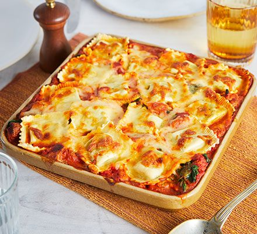

Ravioli Lasagne

Description
Cook this lasagne for the family on a busy weeknight. It only takes 15 minutes to prepare and uses just five ingredients, including shop-bought ravioli
Ingredients
- oil, for frying
- 6 sausages (we used Italian sausages with herbs and fennel)
- 2 x 400g cans chopped tomatoes with garlic & basil
- 200g baby spinach
- 500g spinach & ricotta ravioli (or any flavour you like)
- 75g mixture of grated cheddar and mozzarella
Steps
- Heat a drizzle of oil in a pan. Squeeze the sausagemeat from the skins and fry until browned, using a wooden spoon to break it up. Add the tomatoes and half a can of water and season. Simmer for 20 mins.
- Meanwhile, put the spinach in a colander. Pour over boiled water from the kettle to wilt. Leave to cool, then squeeze out as much of the excess water as you can.
- Heat the oven to 200C/180C fan/gas 6. Spoon a third of the sauce into a medium baking dish (about 18 x 20cm). Top with a third of the spinach and a third of the ravioli, then scatter over some of the cheese. Repeat the layers twice, making sure the final layer of ravioli is nestled into the sauce. Bake for 35-40 mins until bubbling and hot all the way through. Cover if the top starts to get too dark. Will keep in the freezer for up to two months.
Source
Main Page